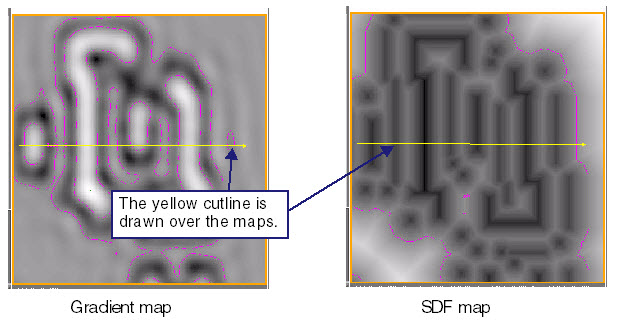
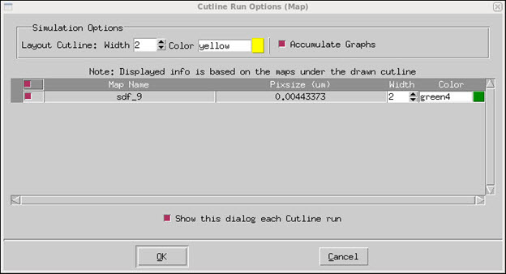
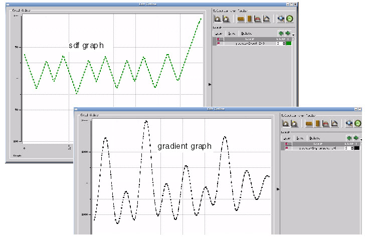

This section
guides you through the steps to draw a cutline and display the resulting
aerial intensity plot using Calibre WORKbench.
Procedure
- Select the map by clicking on it.
The map border turns orange.
- In the WORKbench icon bar,
select Cutline.
- Draw a cutline through the
map by clicking once for the cutline start and once for the cutline
end. This is shown in Figure 1 for the gradient and SDF maps.
Figure 1. Drawing a Cutline
Through Maps
After clicking the cutline
end, the Cutline Run Options dialog box appears.
Figure 2. Cutline Dialog Box
- Select the graph to display
and click OK in the
Cutline Run Options dialog box.
The Edit Cutline dialog box
appears displaying the cutline graph. The graphs show the cutline
distances on the X-axis and signed distance function and aerial
intensity, respectively, on the Y-axis.
Figure 3. Aerial Intensity Graphs
Results
You have drawn cutlines over sdf and
gradient maps and displayed their respective graphs for a portion
of a double-patterning layout.